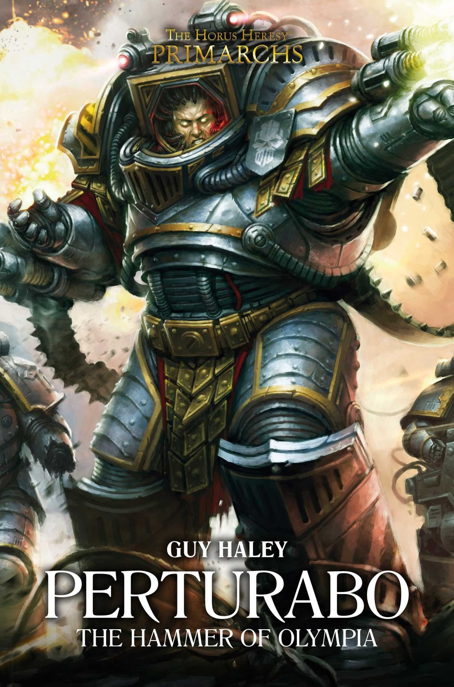

PERTURABO: THE HAMMER OF OLYMPIA

Author: Guy Haley
Format: Novel
As the Iron Warriors fight a difficult campaign against the hrud, Perturabo learns of unrest on Olympia, the world where he was raised. He turns his Legion towards home as the pressures of the Great Crusade mount.
Introduction reviewed against Black Library’s description on 2026-09-27. The publisher page may contain spoilers.
Publication facts: publisher source, checked 2026-09-26.
Open this work in the interactive Archive to track reading progress and explore related works.